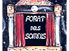
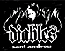

|
|
El diumenge 13 d'Octubre 2002 va començar al nostre poble una activitat que de ben segur despertarà l'interès de totes les nenes i nens de Sant Andreu:
al
local de Diables
de Sant Andreu (carrer Ramon
Batlle, núm. 9)
|
el local dels Diables de Sant Andreu es transformarà en un espai per al joc i la fantasia
a través d'una programació d'espectacles i activitats que es perllongarà en el temps.
Els promotors d'aquesta iniciativa
(Diables de Sant Andreu i tota una colla de gent relacionada amb el món de l'espectacle)
volem oferir una alternativa, lúdica i creativa, a l'actual manca d'activitats per a nens i nenes que pateix avui en dia Sant Andreu i ,
al mateix temps, obrir un espai on la participació de pares i mares sigui possible per mitjà de propostes i iniciatives.
El forat dels somnis vol, doncs, ser alguna cosa més que un lloc on portar els fills perquè es distreguin,
pretén ser un espai obert a la creativitat de tots aquells qui vulguin aportar-hi alguna iniciativa.
Els espectacles començaran a les 12h. Es prega arribar una mica abans
|  | local
dels Diables
de Sant Andreu carrer Ramon i Batlle, 9 Sant Andreu de Palomar | 
per |
|
| |